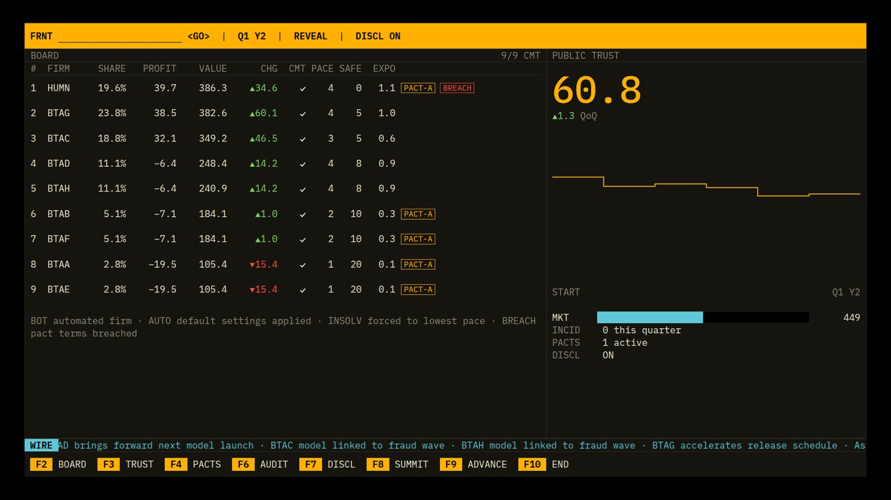
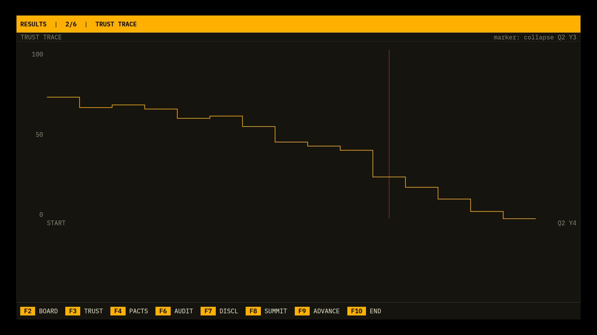
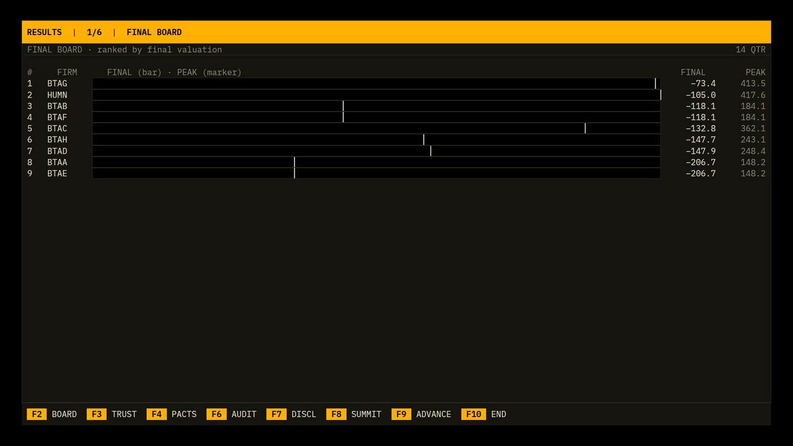
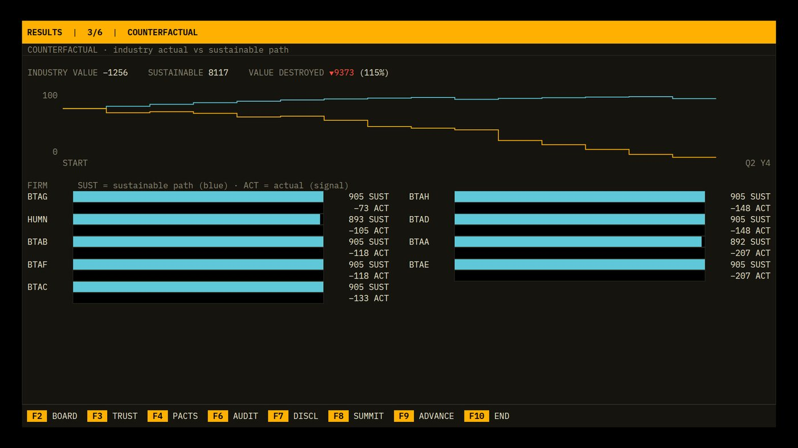
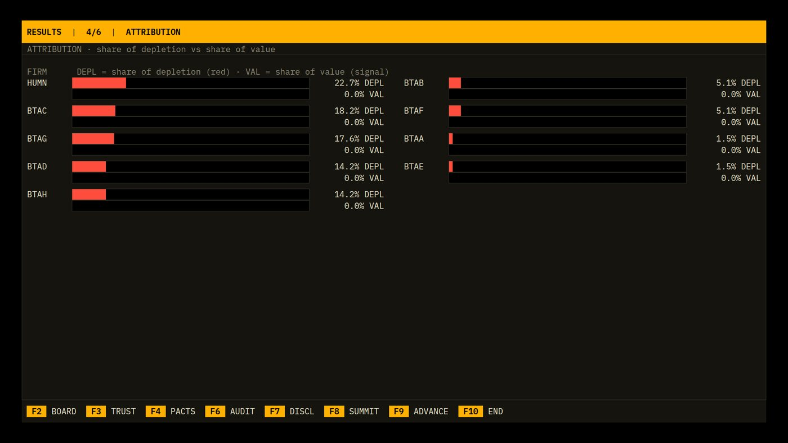
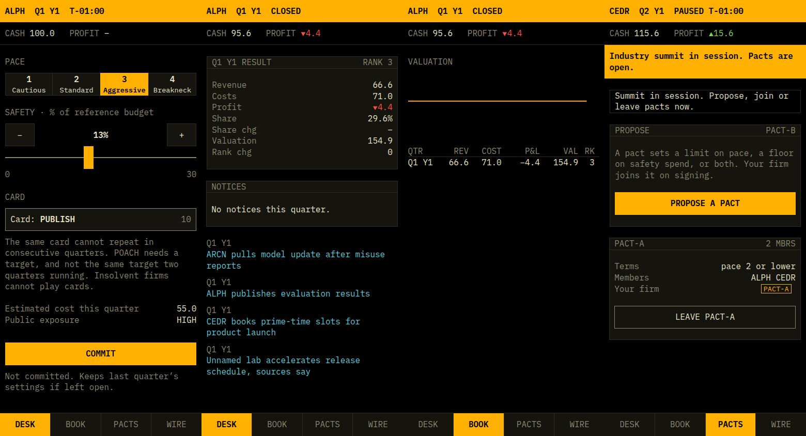
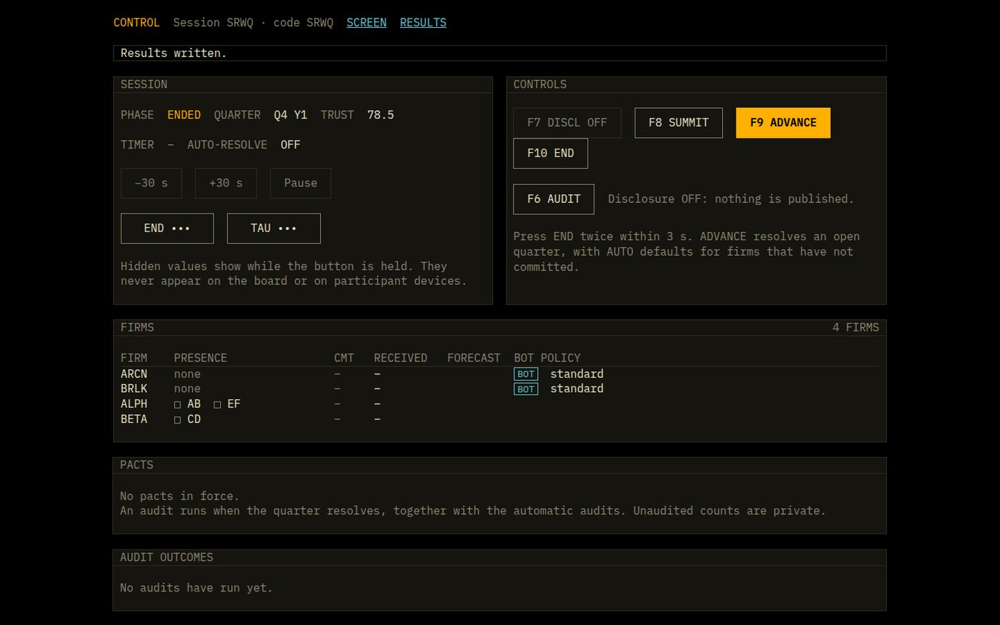
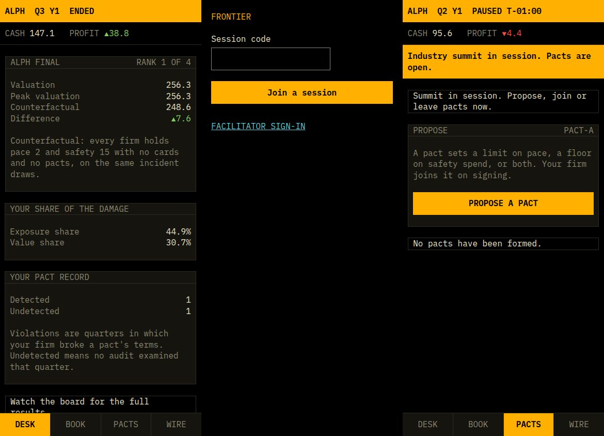

The terminal look is right. The screens look unpolished for five reasons that run across every screen, not because of any one screen: amber does every job, panels don't stand out from the background, charts are bare lines with misaligned labels, layouts leave large empty areas, and explanations are written as sentences where data should be. Two results charts are also blank in the 14-quarter rehearsal because of a bug in how they scale negative values.
On the board screen amber fills the whole top bar, all eight F-key caps, the trust numeral, the chart line and every pact tag. When everything is signal-coloured, nothing is: the eye has no first place to land, and the summit banner merges into the top bar.
The panel fill against true black is 1.14:1 and the rule against the panel is 1.32:1 (computed). On a projector, which lifts blacks, panels and rules will mostly disappear. This is an expectation from the ratios, not a measured projector result.
No gridlines, no ticks, no current-value tag, no labels on τ or the moratorium, no year markers. Axis labels are positioned separately from the plot, so they do not line up with the values, and fixed-width charts stop short of their own x-axis labels.
The board uses the top 60% of its panel; the trust chart floats in the upper half; results panels 1, 4 and 5 use a third of the screen. Empty dark space on a projector looks unfinished rather than calm.
Legends are prose (FINAL (bar) · PEAK (marker), SUST = sustainable path (blue)) and abbreviations (DEPL, SUST, ACT, QoQ) are never explained on screen. Charts state no conclusion, so the room needs the facilitator to say what to look at.
Panel titles are dim 400-weight text, the same as column headers and hints. Titles, headers, values and hints are four different jobs presented in two styles, so dense screens look uniform and are hard to scan.
These are visible faults, not style preferences. All were reproduced in the screenshots from this session's test runs.
| WHERE | SEV | WHAT HAPPENS | CAUSE |
|---|---|---|---|
| Results 1 · Final board | HIGH | In the rehearsal every final valuation is negative, so all nine bars are empty. Only the peak markers show. | barFraction clamps values below zero to 0; the bar has no zero baseline. |
| Results 3 · Counterfactual | HIGH | All "ACT" bars are empty for the same reason. "VALUE DESTROYED 9373 (115%)" reads as an error when actual industry value is negative. | Same clamp; percentage shown without handling a negative actual total. |
| Results 4 · Attribution | HIGH | Every VAL bar is 0.0%, with no explanation, so the panel looks broken. | Value share is zero for every firm when no firm ends positive. |
| Firm view, Trust view, Trust trace | MED | The line ends at about 70% of the width while the last x label sits at the right edge. The y labels do not sit at the values they name. | SVG width fixed in ch inside a wider container; y labels laid out with space-between. |
| Firm view | MED | A rise from 143 to 197 fills the full chart height and looks like a tripling. | y range is min..max of the series with no zero. |
| Phone · BOOK | MED | After one quarter the valuation chart is a single flat line with no axis. | Chart drawn with one point. |
| Projector · Summit | MED | The amber summit banner reads as part of the amber top bar. At 1280 px the PACTS table clips its MEMBERS header. | Same fill for both bars; fixed column widths. |
| Phone · Summit | LOW | Banner and a bordered notice say the same thing back to back. | Banner in header plus notice in PACTS tab. |
| Ticker | LOW | Scrolling text starts flush against the WIRE label and is clipped mid-letter. | No gap between label and window. |
| Results screens | LOW | The full F-key bar is shown although only F9 and F2 do anything there. | Shared FKeyBar without a per-screen key set. |
| Notices (all) | LOW | Bordered notice boxes have no vertical padding, so text touches the rule. | .notice padding is 0 1ch. |
Keep the identity: true black, amber, cyan wire, red and green deltas, one monospace face. Add three structural tokens and a secondary amber so that solid amber is kept for what matters: the primary action, the selection, the viewer's own firm, the countdown and the trust numeral.
--signal-dim outline.--text at weight 600; column headers in --dim on a --raise header row; hints in --dim.
A stepped line suggests trust jumps once a quarter and holds flat, and its long horizontal runs make a 14-quarter history look like a staircase rather than a trend. Three alternatives fit the terminal style:
Straight segments between quarter points, a square marker at each quarter, and a second strip below with one bar per quarter showing the change: green ▲ above zero, red ▼ below. This is the price-and-volume layout of a market terminal. It answers "where is trust?" and "what happened this quarter?" without a legend.
One column per quarter from zero to the trust level, with an outline showing last quarter's height where trust fell. Very easy to read from the back of the room, but heavier, and the trend matters more than the level.
Straight segments with no markers. Cleanest, but quarters become hard to count, and the room cannot tell which quarter caused a drop.

Chart rules that apply everywhere: axes and labels drawn inside the chart on the same scale as the data; horizontal gridlines only; value axis on the right; a solid tag carrying the latest value; τ and the moratorium labelled on the chart; one tick per quarter with year labels; trust always 0–100 and money axes always including zero; the gap between two compared lines filled with a flat 45° hatch. SPEC §16.3 Option A replaces "square steps" in StepSparkline with straight segments; I will log this as a spec deviation.
Today a firm's performance appears as a number in a table row, plus a single-firm chart behind a typed command. Four views make it visible at a glance, each with one clear job:
Live board. A market share strip across the top, then each row with a value bar drawn from zero, rank movement and a trend line. Who leads, by how much, who is moving.
A projector view (command FIRMS). One small chart per firm, all on the same scale, so trajectories can be compared honestly. Who is rising, who peaked.
A projector view (command RANKS) and an optional opening for results. Rank by quarter as connected lines; the leader and the biggest faller highlighted. Overtakes become a story.
Phone BOOK tab. Every other firm as a thin dim line, your firm in amber with its value tag. Answers "am I doing well?" without a facilitator.
The share strip uses cyan, the colour already reserved for market information, and fades it by rank. Tickers are printed in each segment, so identity never depends on colour. Negative values extend left of the zero line in red with a − sign.
FIRMS view)Every card uses the same y-scale and shows the zero line, so a firm that falls below zero is unmistakable. Up to 16 firms fit as a 4 × 4 grid at 1920 × 1080.
RANKS view)Only two firms are highlighted at a time, chosen automatically: the current leader in amber and the largest faller in red. The rest stay dim with labels at the line ends, so 16 firms stay readable.
Each panel gets a headline sentence written from the data, saying the one thing the room should notice. The facilitator then only has to say "discuss".



A row of quarter cells per member: solid red for a detected breach, red outline for an undetected one, a dim dot for a compliant quarter. No mock-up: per-quarter breach data was not available outside the emulator run.

I checked each screen against one test: could someone who missed the briefing tell, within a few seconds, what is happening, what it means for them and what to do next? Revision 1 mostly improved looks; the items marked NEW below are what it missed.
| SCREEN | MUST BE OBVIOUS | GAP TODAY | FIX | STATUS |
|---|---|---|---|---|
| Projector · top bar | Which quarter, what stage, time left | Phase is one word (OPEN, REVEAL); FRNT <GO> and DISCL OFF mean nothing to the room. | Status sentence under the bar, e.g. "Q3 Y2 · Decisions open. Set pace, safety and a card, then commit. 1:42 left." Command line shown only while the facilitator types; "DISCL" spelt "DISCLOSURE". | NEW |
| Projector · board | Who leads, who moved, what the flags mean | CMT, EXPO, SAFE and the tags are abbreviations; positions are numbers only. | Full column words where width allows (CHANGE, PACE, SAFETY, EXPOSURE); key strip for tags on screen; value bars, rank movement and trend. | CORRECTED |
| Projector · trust | What trust is, where it is heading, why it matters | A number and "QoQ". | Subtitle from the existing briefing copy: "Total market revenue tracks public trust." "QoQ" becomes "since last quarter". Change bars show which quarters cost trust. | NEW |
| Projector · reveal | What changed this quarter | Numbers roll, but nothing summarises the quarter. | A reveal headline built from the data, e.g. "Q3 Y2 resolved · Trust ▼5.9 to 45.6 · BTC takes 1st · 2 incidents." | NEW |
| Projector · ticker | What happened, good or bad | One undifferentiated cyan stream. | Quarter prefix; kind-coded glyph and colour. | IN REV 1 |
| Projector · lobby | How to join | Clear already: QR, code, address. | Number the steps: 1 scan or enter code, 2 form or join a firm, 3 wait for the briefing. | NEW |
| Results · every panel | The one lesson of the panel | Charts with prose legends and abbreviations (SUST, ACT, DEPL); no stated conclusion. | Data-written headline per panel; labels on the chart; no abbreviations. | NEW |
| Phone · first visit | How a quarter works | The briefing tab shows market rules only. | A three-step strip in lobby, briefing and the first quarter: DECIDE → COMMIT → REVEAL, with one line each. | NEW |
| Phone · DESK | What to decide, its cost and risk, time left, whether it is committed | Rules paragraph; exposure is a bare word; countdown small; commit state is small grey text. | Decision ticket, inline card effect, large countdown, commit status bar. SAFETY label becomes "SAFETY · share of reference budget, 0–30%". | IN REV 1 + NEW |
| Phone · result | How did I do | A table of seven figures. | One result sentence on top; you-against-the-field chart in BOOK. | NEW |
| Phone · PACTS | What signing commits me to | Clear text, repeated twice during the summit. | Remove the duplicate; show the terms as "pace ≤ 2 · safety ≥ 15%". | IN REV 1 |
| Control console | The next action and which buttons cannot be undone | All buttons look alike. | Group by consequence; irreversible actions outlined red; a "NEXT" hint naming the expected key. | IN REV 1 + NEW |
All proposed wording was checked against the copy rules: no banned or telegraphing terms on participant or projector screens outside results.


FIRMS and RANKS views; phone field chart.Mock-up figures come from a fresh engine run (seed 5, 14 quarters, eight mixed bots and one pace-4 firm). That run has no pacts and no moratorium, so its numbers differ from the rehearsal screenshots. Headlines, phone cash, profit and settings in the mock-ups are illustrative.